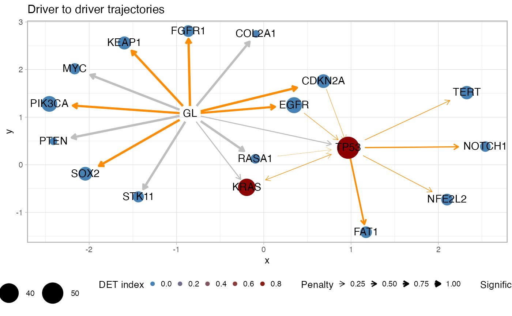
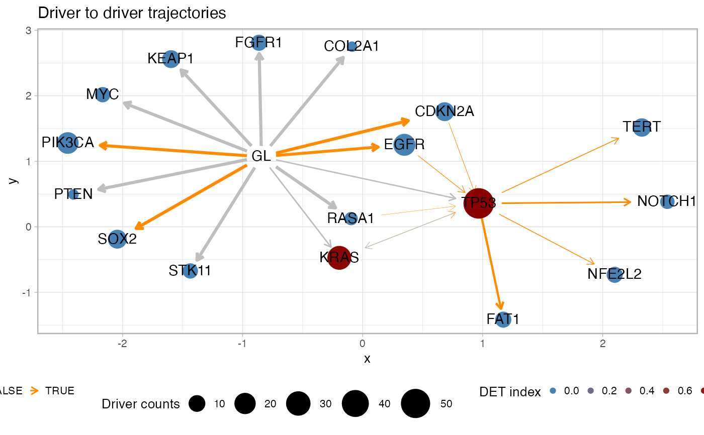

Plot graph-alike summary statistics for the cohort drivers.
Source:R/plot_drivers_graph.R
plot_drivers_graph.RdPlot a graph with driver genes and annotate with different summary statistics for the trajectories that involve the drivers. This visualisation shows the frequency of the driver in the cohort (node size), the penalty for each pair of odering (edge thickness), the significance for the pair of orderings as of a Fisher test (edge coloring) and the overall heterogeneity upstream a driver as of the DET index (node coloring). This function has parameters to subset the computation to a list of predefined drivers, or drivers associated to trajectories with a minimum recurrence in the fits.
plot_drivers_graph( x, drivers = x$variantIDs.driver, min.occurrences = 0, alpha_level = 0.05, ... )
Arguments
| x | A REVOLVER object with fits. |
|---|---|
| drivers | The list of drivers to consider, all by default.
See also function |
| min.occurrences | The minimum number of occurrences for
a trajectory to be considered, zero by default. See also
function |
| alpha_level | The significance level for the enrichment Fisher test. |
| ... | Extra parameters passed to the |
Value
A `ggplot` object of the plot.
See also
Other Plotting functions:
distinct_palette_few(),
distinct_palette_many(),
gradient_palette(),
plot_DET_index(),
plot_clusters(),
plot_dendrogram(),
plot_drivers_clonality(),
plot_drivers_occurrence(),
plot_jackknife_cluster_stability(),
plot_jackknife_coclustering(),
plot_jackknife_trajectories_stability(),
plot_patient_CCF_histogram(),
plot_patient_data(),
plot_patient_mutation_burden(),
plot_patient_oncoprint(),
plot_patient_trees_scores()
Examples
# Data released in the 'evoverse.datasets' data('TRACERx_NEJM_2017_REVOLVER', package = 'evoverse.datasets') # Base plot, can be quite crowded plot_drivers_graph(TRACERx_NEJM_2017_REVOLVER)#> #> =-=-=-=-=-=-=-=-=-=-=-=-=-=-=-=-=-=- #> Enrichment test for incoming edges #> =-=-=-=-=-=-=-=-=-=-=-=-=-=-=-=-=-=- #> # A tibble: 49 x 15 #> estimate p.value conf.low conf.high method alternative from to POS_POS #> <dbl> <dbl> <dbl> <dbl> <chr> <chr> <chr> <chr> <int> #> 1 23.0 1.82e-9 8.60 Inf Fisher'… greater EGFR TP53 13 #> 2 25.4 1.36e-6 4.81 Inf Fisher'… greater GL PIK3… 20 #> 3 10.5 6.27e-6 4.19 Inf Fisher'… greater CDKN… TP53 10 #> 4 12.6 8.68e-6 3.56 Inf Fisher'… greater GL EGFR 20 #> 5 Inf 1.48e-5 5.16 Inf Fisher'… greater GL CDKN… 14 #> 6 Inf 1.48e-5 5.16 Inf Fisher'… greater GL SOX2 14 #> 7 19.8 1.71e-5 5.37 Inf Fisher'… greater TP53 FAT1 7 #> 8 Inf 2.10e-5 9.42 Inf Fisher'… greater RASA1 TP53 5 #> 9 Inf 5.99e-5 14.5 Inf Fisher'… greater BRAF TERT 3 #> 10 Inf 7.41e-5 4.31 Inf Fisher'… greater GL KEAP1 12 #> # … with 39 more rows, and 6 more variables: POS_NEG <int>, NEG_POS <int>, #> # NEG_NEG <int>, alpha_level <dbl>, N <int>, psign <lgl>#> Warning: Removed 1 rows containing missing values (geom_point).# Reduce the number of nodes cutting off low-frequencies one plot_drivers_graph(TRACERx_NEJM_2017_REVOLVER, min.occurrences = 5)#> #> =-=-=-=-=-=-=-=-=-=-=-=-=-=-=-=-=-=- #> Enrichment test for incoming edges #> =-=-=-=-=-=-=-=-=-=-=-=-=-=-=-=-=-=- #> # A tibble: 15 x 15 #> estimate p.value conf.low conf.high method alternative from to POS_POS #> <dbl> <dbl> <dbl> <dbl> <chr> <chr> <chr> <chr> <int> #> 1 Inf 3.10e-8 11.5 Inf Fisher'… greater EGFR TP53 13 #> 2 Inf 3.16e-7 15.0 Inf Fisher'… greater TP53 FAT1 7 #> 3 Inf 2.01e-6 8.13 Inf Fisher'… greater CDKN… TP53 10 #> 4 Inf 2.95e-6 11.9 Inf Fisher'… greater TP53 TERT 6 #> 5 Inf 7.88e-6 7.08 Inf Fisher'… greater KRAS TP53 9 #> 6 Inf 2.67e-5 9.10 Inf Fisher'… greater TP53 NFE2… 5 #> 7 Inf 2.67e-5 9.10 Inf Fisher'… greater TP53 NOTC… 5 #> 8 Inf 9.14e-4 2.67 Inf Fisher'… greater GL EGFR 20 #> 9 Inf 9.14e-4 2.67 Inf Fisher'… greater GL PIK3… 20 #> 10 Inf 1.64e-3 3.21 Inf Fisher'… greater RASA1 TP53 5 #> 11 Inf 8.06e-3 1.75 Inf Fisher'… greater GL CDKN… 14 #> 12 Inf 8.06e-3 1.75 Inf Fisher'… greater GL SOX2 14 #> 13 3.26 1.52e-2 1.31 Inf Fisher'… greater TP53 KRAS 8 #> 14 Inf 1.64e-2 1.45 Inf Fisher'… greater GL KEAP1 12 #> 15 Inf 4.69e-2 1.03 Inf Fisher'… greater GL FGFR1 9 #> # … with 6 more variables: POS_NEG <int>, NEG_POS <int>, NEG_NEG <int>, #> # alpha_level <dbl>, N <int>, psign <lgl>#> Warning: Removed 1 rows containing missing values (geom_point).# As above, but with a more stringent test plot_drivers_graph(TRACERx_NEJM_2017_REVOLVER, min.occurrences = 5, alpha_level = 0.01)#> #> =-=-=-=-=-=-=-=-=-=-=-=-=-=-=-=-=-=- #> Enrichment test for incoming edges #> =-=-=-=-=-=-=-=-=-=-=-=-=-=-=-=-=-=- #> # A tibble: 15 x 15 #> estimate p.value conf.low conf.high method alternative from to POS_POS #> <dbl> <dbl> <dbl> <dbl> <chr> <chr> <chr> <chr> <int> #> 1 Inf 3.10e-8 11.5 Inf Fisher'… greater EGFR TP53 13 #> 2 Inf 3.16e-7 15.0 Inf Fisher'… greater TP53 FAT1 7 #> 3 Inf 2.01e-6 8.13 Inf Fisher'… greater CDKN… TP53 10 #> 4 Inf 2.95e-6 11.9 Inf Fisher'… greater TP53 TERT 6 #> 5 Inf 7.88e-6 7.08 Inf Fisher'… greater KRAS TP53 9 #> 6 Inf 2.67e-5 9.10 Inf Fisher'… greater TP53 NFE2… 5 #> 7 Inf 2.67e-5 9.10 Inf Fisher'… greater TP53 NOTC… 5 #> 8 Inf 9.14e-4 2.67 Inf Fisher'… greater GL EGFR 20 #> 9 Inf 9.14e-4 2.67 Inf Fisher'… greater GL PIK3… 20 #> 10 Inf 1.64e-3 3.21 Inf Fisher'… greater RASA1 TP53 5 #> 11 Inf 8.06e-3 1.75 Inf Fisher'… greater GL CDKN… 14 #> 12 Inf 8.06e-3 1.75 Inf Fisher'… greater GL SOX2 14 #> 13 3.26 1.52e-2 1.31 Inf Fisher'… greater TP53 KRAS 8 #> 14 Inf 1.64e-2 1.45 Inf Fisher'… greater GL KEAP1 12 #> 15 Inf 4.69e-2 1.03 Inf Fisher'… greater GL FGFR1 9 #> # … with 6 more variables: POS_NEG <int>, NEG_POS <int>, NEG_NEG <int>, #> # alpha_level <dbl>, N <int>, psign <lgl>#> Warning: Removed 1 rows containing missing values (geom_point).